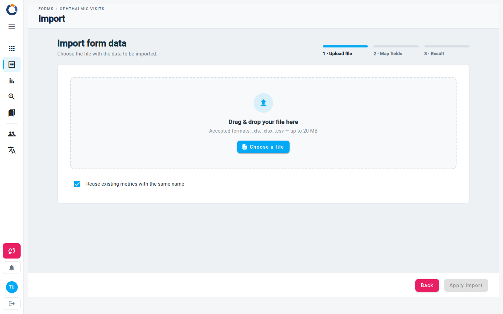
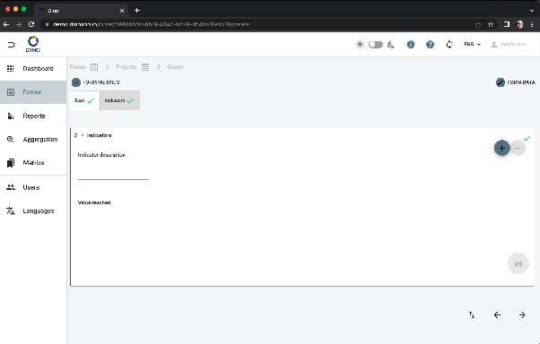

Importar datos
La página Importar datos te permite subir datos de forma masiva en un form schema desde un archivo .xls, .xlsx o .csv. Un asistente de tres pasos — Subir archivo, Asignar campos, Resultado — te guía a través de la carga del archivo, la asignación de sus columnas a los campos del form y la revisión del resultado.

Acceder a la página de importación
- Ve a la lista Formularios y selecciona un form schema.
- Desde la vista de datos del form, haz clic en Importar formularios en la barra de herramientas.
Paso 1 — Subir archivo
El primer paso muestra una zona de arrastrar y soltar o un selector de archivos.
- Formatos aceptados:
.xls,.xlsx,.csv - Tamaño máximo del archivo: 20 MB
Para subir un archivo:
- (Opcional) Deja marcada la opción Reutilizar métricas existentes con el mismo nombre (valor predeterminado) para que cualquier métrica del archivo cuyo nombre coincida con una métrica ya existente en el sistema se vincule a esa métrica existente en lugar de crear un duplicado. Desmárcala para crear siempre métricas nuevas.
- Arrastra un archivo a la zona punteada o haz clic en Elegir un archivo para buscarlo.
- Una vez leído el archivo, el asistente pasa por sí solo a Asignar campos.
Dar formato al archivo de importación
Consulta la descripción en la sección más abajo
Formatos de archivo sencillos
Dino acepta el mismo archivo que se obtiene durante la exportación. Por lo tanto, la forma más sencilla de obtener un archivo con el formato adecuado para la importación es exportar primero algunos datos del mismo esquema y luego eliminar las filas que contienen los datos exportados, conservando solo los encabezados de columna. En cualquier caso, asegúrate de que los encabezados de columna sean claros: se usarán como sugerencias durante la asignación.
Métricas identificadas por ID
Si una columna de métrica de tu archivo proporciona el ID (UUID) de la métrica, esa fila se vincula a la métrica existente con ese ID y no se crea ninguna métrica nueva. El ID tiene prioridad sobre el nombre de la métrica, por lo que esto ocurre independientemente de la opción Reutilizar métricas existentes con el mismo nombre (que solo se aplica a la coincidencia por nombre).
Paso 2 — Asignar campos
Tras la carga, verás una tabla con todas las columnas de tu archivo. Cada fila tiene tres columnas:
- Columna del archivo – el encabezado original de tu archivo.
- Campo – un menú desplegable donde seleccionas el campo del form correspondiente.
- Estado – muestra si la columna está asignada, ignorada o tiene un error.
Acciones de asignación
- Seleccionar un campo del form – abre el menú desplegable de una columna y elige el campo correcto. Puedes buscar dentro del menú desplegable.
- Ignorar una columna – selecciona la opción — Ignorar esta columna — en el menú desplegable, o haz clic en el botón Ignorar de la columna de estado. Las columnas ignoradas aparecen atenuadas.
- Restaurar una columna ignorada – haz clic en el botón Restaurar de la columna de estado.
Coincidencia automática
Cuando se lee el archivo, Dino asigna cada columna cuyo encabezado sea exactamente el nombre de un campo del form, o el nombre de un campo repetible seguido de __N (consulta Diapositivas repetibles). Las demás columnas quedan pendientes de que las asignes tú.
Haz clic en Reasociar todo para restablecer todas las columnas y dejar que Dino las asocie de nuevo, esta vez emparejando también las columnas con campos cuyos nombres o etiquetas sean similares. Revisa el resultado y ajusta las asignaciones según sea necesario.
La coincidencia funciona mejor con encabezados que son los nombres de los campos, como en un archivo exportado.
Repetición
Si el campo del form seleccionado es un campo repetible (por ejemplo, varios números de teléfono), aparece un campo Repetición debajo del menú desplegable. Introduce el índice de repetición (0, 1, 2, …) para asignar esta columna del archivo a una ocurrencia del grupo repetible.
Resumen de la barra de herramientas
En la parte superior del área de asignación puedes ver tres indicadores:
- Total de columnas – número de columnas del archivo.
- Asignado – columnas que se han asignado a un campo del form.
- Ignorado – columnas que decidiste ignorar.
Usa el campo Buscar columnas… para filtrar la tabla por el nombre de la columna del archivo.
Haz clic en Atrás para volver al paso de carga: el archivo y las asignaciones se descartan, y debes elegir el archivo de nuevo.
Cuando todas las columnas deseadas estén asignadas y no existan errores, el botón Aplicar importación se activa. Haz clic en él para iniciar la importación. Mientras se procesa, aparece un indicador de carga.
Asignación duplicada
Si asignas el mismo campo del form a más de una columna del archivo, se muestra un error de validación (Campo asignado a más de una columna) y el botón Aplicar importación permanece deshabilitado hasta que se corrija.
Paso 3 — Resultado
El último paso informa de lo que ha ocurrido:
- Un aviso te indica si la importación fue correcta, parcial (algunas filas fueron rechazadas) o terminó con un ERROR (no se importó nada).
- Los contadores muestran Filas importadas, Filas rechazadas, Filas del archivo y Métricas creadas.
- Las listas de incidencias muestran las filas del archivo afectadas y el motivo. Usa Buscar por fila o error para filtrar listas largas.
Haz clic en Cerrar para volver a la lista de datos del form, donde aparecen los nuevos datos. Tras un error, Atrás te lleva de nuevo al paso de asignación para corregir los problemas.
Formato del archivo
Describimos el procedimiento para importar datos de forma masiva usando un archivo Excel generado a partir de una hoja de Google. El mismo procedimiento sirve para archivos CSV o si trabajas directamente con Excel.
Supongamos que quieres importar datos en un form llamado Projects que tiene 2 diapositivas, una de las cuales es una diapositiva repetible:

El form Projects se creó con el siguiente XLSForm. La hoja "survey" es
| type | name | label |
|---|---|---|
| begin group | start | Start |
| select_one countries | country | Country |
| select_multiple countries | country_other | Other Countries |
| text | title | Project Title |
| date | project_date_start | Start date |
| select_one donors | selected_donor | Donor |
| integer | budget | Budget |
| boolean | isleader | Leading applicant |
| end group | ||
| begin repeat | indicators | Indicators |
| text | indic | Indicator description |
| integer | value_indic | Value reached |
| end repeat |
y la de "choices" es
| list_name | name | label |
|---|---|---|
| donors | ue | UE |
| donors | govita | ITALIAN GOVERNMENT |
| donors | un | UN |
| donors | pub | ALTRI DONATORI PUBBLICI |
| donors | la | ENTI LOCALI |
| donors | priv | DONATORI PRIVATI |
| donors | other | Others |
| countries | AFG | Afghanistan |
| countries | ALB | Albania |
| countries | DZA | Algeria |
| countries | ASM | American Samoa |
Sigue estos pasos:
- Crea un archivo vacío con una sola hoja (los nombres del archivo y de la hoja no importan).
- En la primera fila debes poner los nombres de los campos del form y de los campos específicos de DINO. En este ejemplo, los campos del form pueden ser:
- country
- country_other
- title
- project_date_start
- selected_donor
- budget
- isleader
- indic (*)
- value_indic (*)
ten en cuenta que los campos que están dentro de diapositivas repetibles deben tratarse de forma diferente (por eso hemos puesto un asterisco). Consulta la sección específica más abajo.
Los campos específicos de DINO pueden ser:
- created_at. La fecha de creación del form. Especifica esto solo si quieres que tus forms tengan una fecha de creación distinta a la fecha de importación;
- user_data_ref_id. El ID del usuario que se asociará al form. Solo se aplica cuando importa un administrador; para los demás usuarios el valor se ignora y los forms se asignan al usuario que los está importando;
- area_id. El ID de la métrica AREA que se asociará al form;
- [area_name]
- case_id. El ID de la métrica CASE que se asociará al form;
- [case_name]
- project_id. El ID de la métrica PROJECT que se asociará al form;
- [project_name]
- [project_code]
- location_id. El ID de la métrica LOCATION que se asociará al form;
- [location_name]
- organization_id. El ID de la métrica ORGANISATION que se asociará al form;
- [organization_name]
- form_status_name. El nombre de uno de los estados del form schema. Las filas sin este valor reciben el primer estado del esquema. Si algún valor no coincide con un nombre de estado existente, el archivo no se importa (Estado del form no válido);
-
dinoinvalid. Marca el form como no válido. Usa
true,1,yes,yox; cualquier otro valor o una celda vacía deja el form como válido. -
cada fila corresponderá a un form nuevo diferente. Así, si creamos un archivo con un encabezado más, digamos, 5 filas de datos, si la carga se realiza correctamente, crearemos 5 forms nuevos en DINO.
- No es necesario tener una columna para cada campo del form; no es necesario rellenar todas las filas de una columna determinada, pero si un campo está vacío en todas las filas, se puede omitir.
- Los campos de fecha deben tener el formato AAAA-MM-DD como texto (ten cuidado).
- Los campos de opción única deben contener una de las opciones aceptadas según lo especificado en "choices" (consulta el form builder o el archivo XLSForm).
- Los campos de opción múltiple deben tener el siguiente formato: [opt1, opt2] (es decir, una lista de opciones entre corchetes).
Por ejemplo, un archivo válido podría ser el siguiente:
| country | country_other | title | project_date_start | budget | isleader | area_id |
|---|---|---|---|---|---|---|
| ALB | [AFG,DZA] | Human rights in education | 2022-01-28 | 120000 | true | 81387ff7-5c7d-44e7-9dc6-76b8d09265ac |
| ASM | A new approach to social justice | 2022-02-14 | 20000 | 81387ff7-5c7d-44e7-9dc6-76b8d09265ac |
En este caso estamos importando 2 forms; para ambos seleccionamos solo la métrica AREA. Además, fíjate en que no proporcionamos todos los campos del form para todos los forms, pero para los campos en los que sí proporcionamos un valor, seguimos estrictamente las indicaciones descritas arriba.
Gestionar las métricas durante la importación
Durante la importación de datos de un form, en lo que a métricas se refiere, puede que quieras:
- crear métricas nuevas durante la importación
- reutilizar métricas ya creadas
Las reglas que hay que seguir para gestionar correctamente las métricas son las siguientes:
| MÉTRICA | CREAR DESDE LA UI | CREAR DESDE LA IMPORTACIÓN | CREAR + ASIGNAR DESDE LA IMPORTACIÓN | USAR DESDE LA IMPORTACIÓN | CREAR + ASIGNAR DESDE LA IMPORTACIÓN (padre) | USAR COMO PADRE |
|---|---|---|---|---|---|---|
| Caso | name | name | name | id, o name (con la opción de reutilización), o ambos | name, en otra fila del mismo archivo | id o name |
| Organización | name | name | name | id, o name (con la opción de reutilización), o ambos | name, en otra fila del mismo archivo | id o name |
| Ubicación | name | name | name | id, o name (con la opción de reutilización), o ambos | name, en otra fila del mismo archivo | id o name |
| Área | name | name | name | id, o name (con la opción de reutilización), o ambos | name, en otra fila del mismo archivo | id o name |
| Proyecto | name, code | name, code | name, code | id, o name (con la opción de reutilización), o ambos | name y code, en otra fila del mismo archivo | id o name |
Cuando una fila tiene tanto el id como el name de una métrica, prevalece el id y el name se ignora. Solo se crea una métrica nueva cuando se indica el name y el id está vacío.
Los padres se establecen con las columnas <metric>_parent_id y <metric>_parent_name (por ejemplo location_parent_name), y solo se aplican a las métricas creadas por la importación. El padre debe ser del mismo tipo de métrica, y debe existir ya o ser creado por otra fila del mismo archivo, en cualquier orden. Un padre que no coincide con nada no se crea: esa métrica se informa como métrica con padre no válido.
Diapositivas repetibles
Si tienes campos en diapositivas repetibles, deben nombrarse de forma diferente. Cada campo de la diapositiva repetible debe llamarse \<field_name>__X, donde X es el número de repetición, de 0 (correspondiente a una repetición) a N-1, donde N es el número total de repeticiones de la diapositiva en ese form.
Por ejemplo, supongamos que tienes solo 1 repetición de la diapositiva repetible y quieres añadir los campos "Indicator description" y "Value reached". Tendrías que añadir estas dos columnas a tu archivo de importación:
| indic__0 | value_indic__0 |
|---|---|
| Number of children | 100 |
Así, por ejemplo, podríamos tener:
| country | budget | indic__0 | value_indic__0 | indic__1 | value_indic__1 | isleader |
|---|---|---|---|---|---|---|
| ALB | 120000 | Children | 100 | true | ||
| ASM | 20000 | |||||
| AFG | 15000 | Parents | 45 | Schools | 34 | true |
Errores
- IDs desconocidos – si una columna hace referencia a un usuario o a una métrica mediante un ID que no existe en Dino, el archivo completo no se importa (¡Archivo no importado!), y el resultado muestra los IDs de usuario no válidos o los IDs de métrica no válidos. Comprueba los IDs de tu archivo antes de importar.
- Estado del form desconocido – un
form_status_nameque no coincide con ningún estado del esquema también detiene la importación (Estado del form no válido). - Métricas que no se pueden vincular – una fila que nombra una métrica que Dino no puede crear o encontrar se rechaza, y el resultado muestra el motivo; las demás filas se importan.